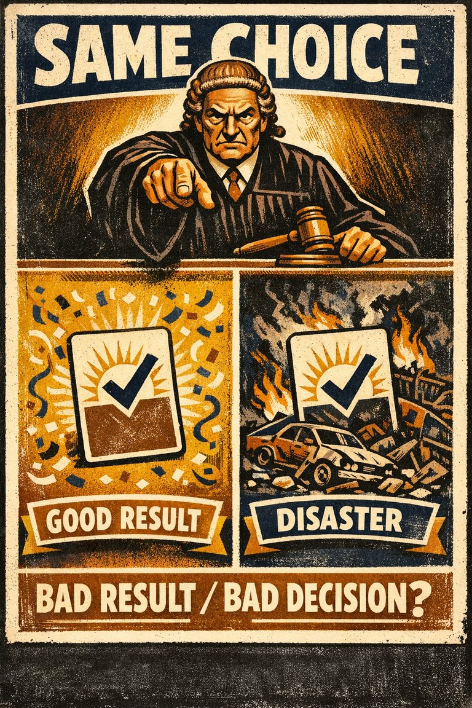
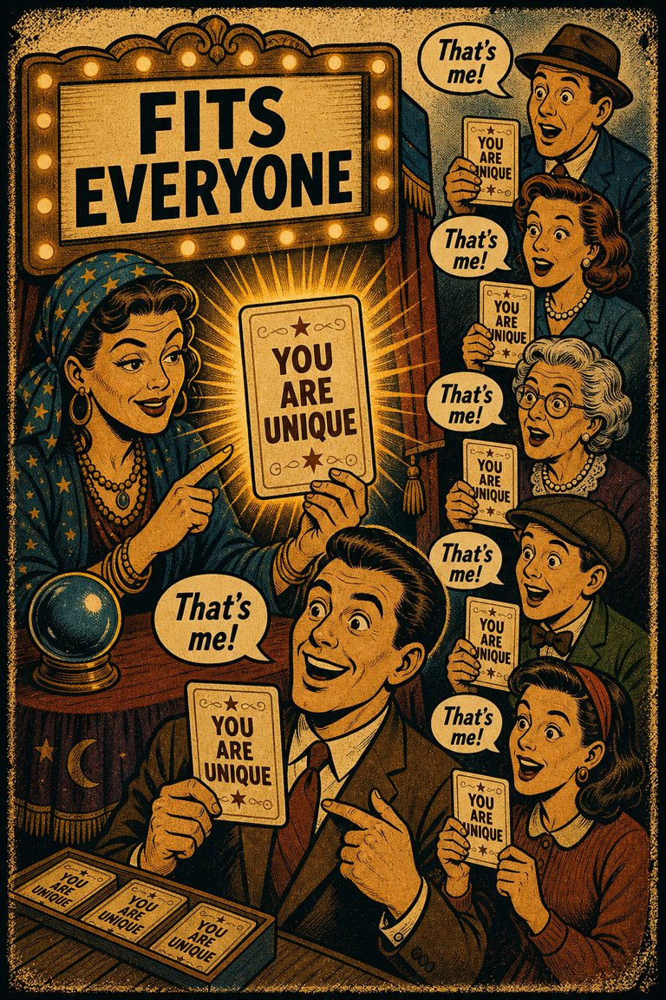
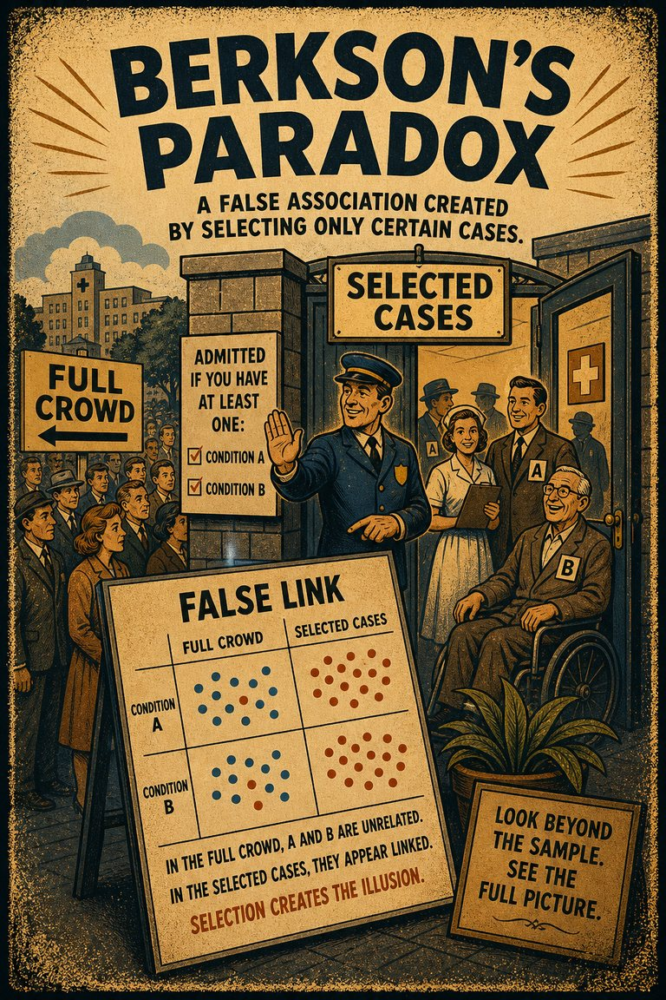
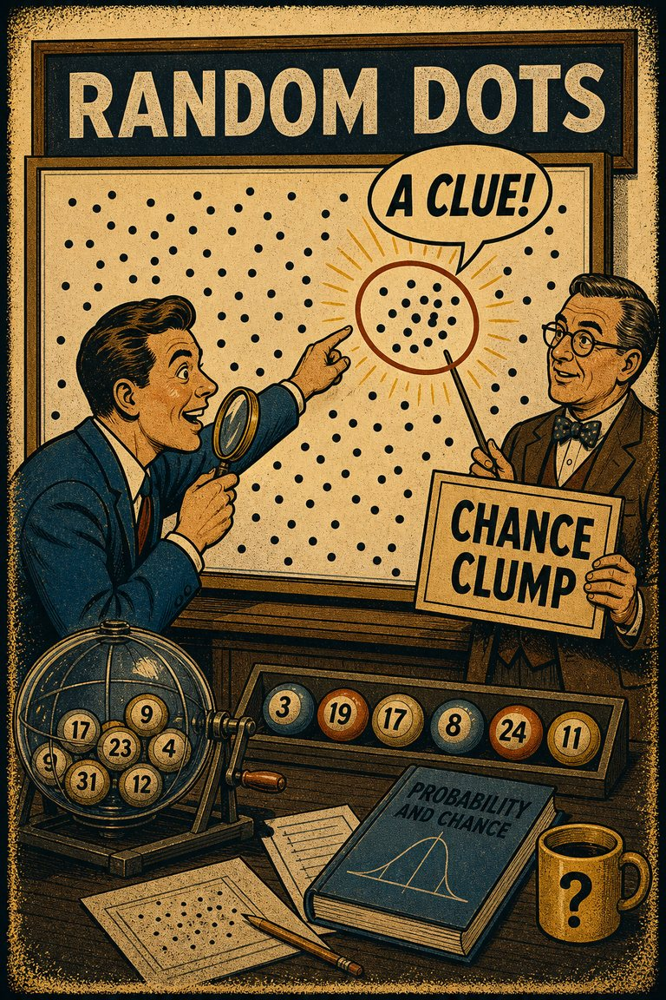

Common in live judgment
74
Especially common when argument evaluation gets fused with worldview defense.
Rare
Frequent

Cognitive Biases
A practical cognitive-bias site with clear definitions, learning paths, assessments, self-audits, and debiasing tools.
Cognitive Bias
The tendency to judge an argument as stronger when its conclusion seems believable and weaker when its conclusion seems unbelievable, even if the reasoning structure is unchanged.
What it distorts
It bends reasoning assessment by letting agreement with the conclusion substitute for inspection of the inferential steps.
Typical trigger
Identity-charged claims, moralized topics, familiar narratives, and arguments where the conclusion arrives before the structure has been consciously checked.
First countermove
Evaluate whether the premises actually support the conclusion before asking whether the conclusion sounds true.
Best use
Structured process
Am I treating this reasoning as sound because the conclusion already feels true?
Conclusion fit crowds out structural evaluation. When the endpoint already feels true or false, the mind starts grading the reasoning through the lens of that felt plausibility.
These are classroom-facing editorial estimates for comparing how the bias behaves in use. They are teaching aids, not measured statistics.
Common in live judgment
74
Especially common when argument evaluation gets fused with worldview defense.
Easy to spot from outside
38
Easier to diagnose after the conclusion is swapped while the structure stays the same.
Easy to innocently commit
84
Believable endings naturally make the reasoning feel more orderly.
Teaching difficulty
49
Needs side-by-side form comparisons to become vivid.
This comparison makes the hidden pull easier to see before the technical label has to do all the work.
Biased move
This is like praising a map for accuracy because it happens to end at the city you wanted to reach.
Clearer comparison
A welcome destination does not rescue a bad route. Good reasoning has to be judged by structure, not by whether the ending feels sensible.
Do not use this label whenever someone agrees with a conclusion. The issue is that believability is masking defects in the inferential structure itself.
Use this label when a plausible or ideologically welcome conclusion makes a weak argument feel stronger than it would if the exact same structure pointed somewhere less agreeable.
Use the quick check, caveat, and nearby confusions together. The fastest diagnosis is often the noisiest one.
Each example changes the surface context while keeping the same hidden distortion in place.
A person accepts a weak argument because it supports a view they already find obviously plausible.
A proposal gets an easier logical pass because the team likes the strategic destination and stops checking whether the supporting case really reaches it.
People grade arguments differently based on whose conclusion they endorse, even when the inferential structure is equally poor.
The argument seems fine because the conclusion already lands in the right place, which makes the reasoning defects harder to notice.
Teaching note: This entry is especially useful because it shows how agreement with a conclusion can quietly corrupt evaluation of the reasoning itself.
The strongest debiasing moves change the process, not just the label.
Rewrite the argument in abstract form or swap the conclusion label to see whether your logic judgment changes.
Ask one person to test the reasoning structure independently of whether the group likes the endpoint.
Teach argument review as a separate step from agreement review so conclusion appeal cannot do both jobs at once.
Practice And Repair
Belief bias is a good reminder that argument evaluation is not the same thing as conclusion approval. A pleasing conclusion can launder weak structure without anyone noticing the switch.
An argument ends at a conclusion that already sounds plausible, moral, or familiar.
Because the conclusion lands well, the inferential path also starts to feel cleaner than it is.
Conclusion quality begins substituting for logical quality.
Test the structure with the conclusion emotionally neutralized or reversed before deciding whether the argument itself works.
If the same reasoning produced an unwelcome conclusion, would I still call the argument strong?
Spot It
Slow It
Reframe It
These are nearby labels that can share the same outer appearance while differing in what actually drives the distortion. Use the overlap, the distinction, and the diagnostic question together before settling the call.
Why compare it: Confirmation bias selectively favors supporting evidence; belief bias specifically misjudges the quality of the reasoning because the conclusion feels believable.
Why compare it: Motivated reasoning bends standards in service of desired conclusions more broadly; belief bias is the narrower logic-evaluation failure driven by conclusion plausibility.
Why compare it: Outcome bias judges a process by how it ended; belief bias judges an argument by whether the ending conclusion already seems right.
These are useful when the label seems roughly right but the process change still feels underspecified.
Would I still call this reasoning strong if it led to a conclusion I disliked?
What exactly is the inferential step from premise to conclusion here?
Am I evaluating the argument, or merely recognizing agreement with the endpoint?
These sourced cases do not prove what was in someone's head with perfect certainty. They are teaching cases for showing where the bias pressure becomes visible in practice.
Belief-bias syllogism studies
People often judge invalid syllogisms as valid when the conclusion seems believable, and valid ones as weaker when the conclusion seems implausible.
Why it fits: Believability is quietly grading the argument instead of merely following it.
Modern reasoning research
Valid arguments discounted when the conclusion sounds wrong
The same logical form can be rated differently depending on whether the conclusion fits prior belief, with valid structures discounted when their conclusions sound wrong to the participant.
Why it fits: Perceived truth of the conclusion is standing in for assessment of validity.
Modern reasoning research
These linked tools turn the page into practice instead of leaving it at the level of definition.
This bias appears directly in one guided sequence and also in nearby paths that frame the same judgment problem from a slightly wider angle.
Direct path
Self-Justification And Meta-Bias
Use this path when the real work is not spotting another person's bias, but seeing how your own story is defending itself.
Nearby path
Use this path when you suspect that the apparent evidential picture is itself distorted.
This bias does not yet have its own dedicated self-check, but these nearby audits usually catch the same kind of drift before it hardens.
Nearby audit
Before You Explain What Happened
What part of this explanation is genuinely shown, and what part merely feels satisfying now that the ending is known?
Nearby audit
Is this memorable because it is representative, or because it is dramatic and easy to circulate?
This bias is not yet the named center of its own kit, but it already appears in nearby workshop material that teaches the same pressure in context.
Nearby workshop
A facilitation kit for rooms where agreement, hierarchy, and speed may be replacing independent judgment.
These scenarios mix direct and nearby cases so you can practice the label itself and the broader judgment pattern around it.
Direct scenario
The conclusion sounds right, so the argument must be fine
A student nods along with a weak argument because the conclusion matches what she already thinks is obviously true, and only later notices that the premises did not actually suppo…
Nearby scenario
Research with a favorite answer
A manager asks for evidence about remote work, opens five articles supporting the policy she already prefers, and stops there because the picture now feels clear enough.
These links widen the frame around the bias without interrupting the core lesson on this page.
A guide to building instruction around calibration, comparison, and challenge rather than around confidence displays alone.
CogBias theory
A theory essay on why favorable outcomes and tidy moral stories often make weak reasoning look stronger after the fact than it was under uncertainty.
CogBias theory
These neighbors were selected from shared categories, shared patterns, and explicit editorial links where available.

The tendency to notice, seek, and remember evidence that supports the story you already prefer more readily than evidence that threatens it.

The tendency to use reasoning as a defense lawyer for desired conclusions rather than as an impartial search for what is most likely true.

The tendency to judge a decision mainly by its result rather than by the quality of the reasoning behind it.

The tendency to accept vague, flattering, or generic descriptions as uniquely accurate of oneself.

The tendency to draw misleading statistical conclusions from conditionally selected samples.

The tendency to overestimate the importance of small runs, streaks, or clusters in large samples of random data.